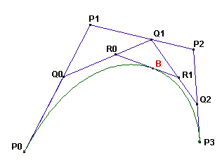

A cubic Bézier curve is defined by four points: $P_0, P_1, P_2,$ and $P_3$.

The curve is constructed as follows:
On the segments $P_0 P_1$, $P_1 P_2$, and $P_2 P_3$ the points $Q_0, Q_1,$ and $Q_2$ are drawn such that $\dfrac{P_0 Q_0}{P_0 P_1} = \dfrac{P_1 Q_1}{P_1 P_2} = \dfrac{P_2 Q_2}{P_2 P_3} = t$, with $t$ in $[0, 1]$.
On the segments $Q_0 Q_1$ and $Q_1 Q_2$ the points $R_0$ and $R_1$ are drawn such that
$\dfrac{Q_0 R_0}{Q_0 Q_1} = \dfrac{Q_1 R_1}{Q_1 Q_2} = t$ for the same value of $t$.
On the segment $R_0 R_1$ the point $B$ is drawn such that $\dfrac{R_0 B}{R_0 R_1} = t$ for the same value of $t$.
The Bézier curve defined by the points $P_0, P_1, P_2, P_3$ is the locus of $B$ as $Q_0$ takes all possible positions on the segment $P_0 P_1$.
(Please note that for all points the value of $t$ is the same.)
From the construction it is clear that the Bézier curve will be tangent to the segments $P_0 P_1$ in $P_0$ and $P_2 P_3$ in $P_3$.
A cubic Bézier curve with $P_0 = (1, 0), P_1 = (1, v), P_2 = (v, 1),$ and $P_3 = (0, 1)$ is used to approximate a quarter circle.
The value $v \gt 0$ is chosen such that the area enclosed by the lines $O P_0, OP_3$ and the curve is equal to $\dfrac{\pi}{4}$ (the area of the quarter circle).
By how many percent does the length of the curve differ from the length of the quarter circle?
That is, if $L$ is the length of the curve, calculate $100 \times \dfrac{L - \frac{\pi}{2}}{\frac{\pi}{2}}$
Give your answer rounded to 10 digits behind the decimal point.
solve() → ?